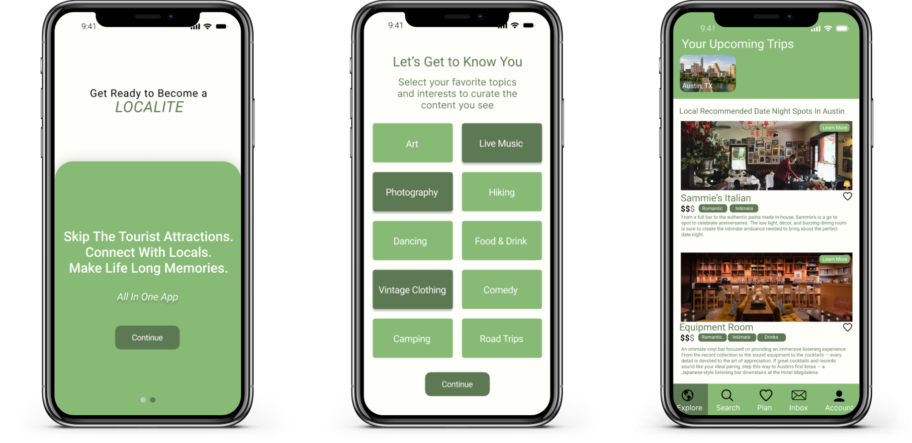
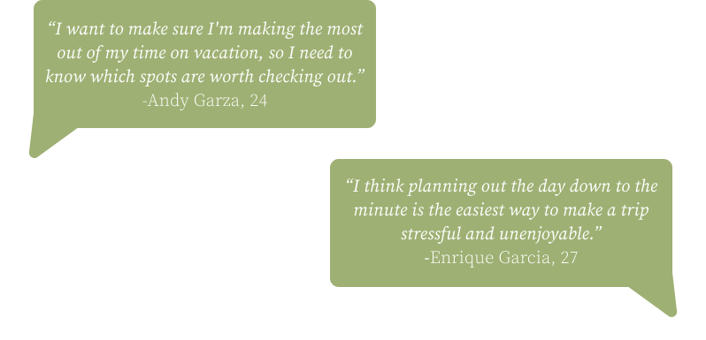
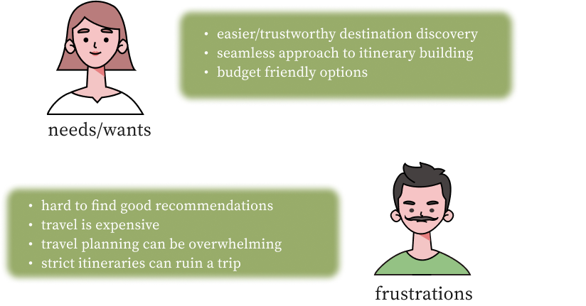
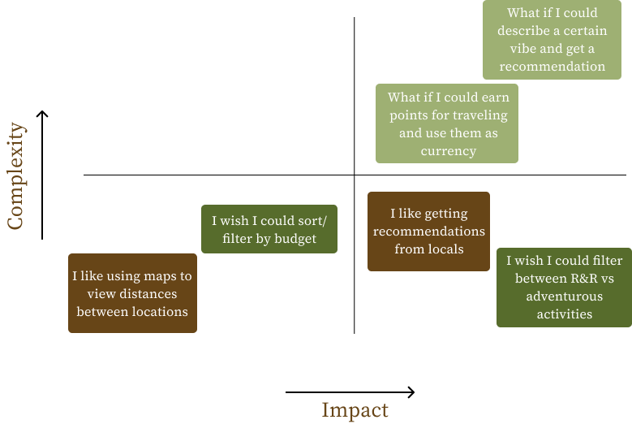
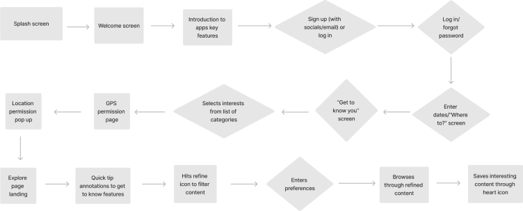
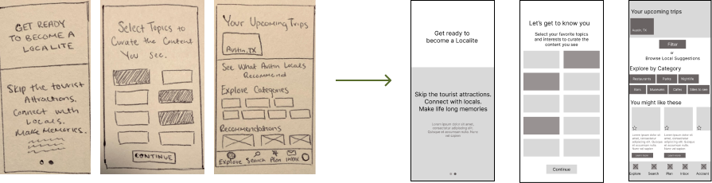
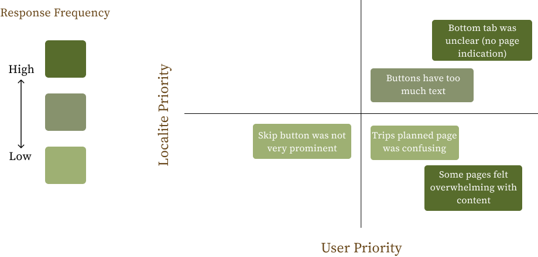
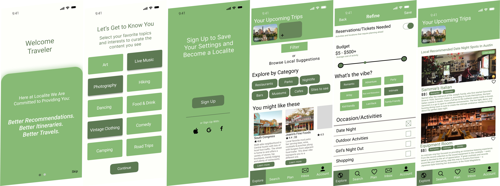

An app designed to help travelers discover new locations to explore from those who know the area best, locals.
To start, I created both a research and interview plans with the main goal of understanding the hardships users encounter when planning for a vacation. Through interviewing I found that users main pain points when it comes to travel planning is time management and location/destination discovery.
Using an affinity diagram I compiled the user insights from my five interviews and began to see a pattern. Users do not want an overly strict itinerary. There was a clear frustration with both under planning and over planning. I knew this is what Localite would have to address by creating a happy medium.
Through the creation of an empathy map I was able to understand that users want to make the most out of their time away from home and need trustworthy recommendations as to what to do and where to go when they ae in a new environment.
Through data synthesizing I found that travelers looking to make the most out of their time away from home need a seamless approach to creating itineraries full of unique, interesting and most importantly, local approved activities/locations to visit when on vacation because current travel planning platforms can be overwhelming and unreliable.
Taking this into consideration, I moved into creating I like, I wish, What if statements and then sorted them onto a feature prioritization matrix to determine what features would most seamlessly solve our users problems.
The highest impact and lowest complexity features on the prioritization matrix ranged from curated lists of recommendations, local approved lists, and social features. Keeping these user insights in mind, I moved into ideating how to bring these solutions to life for our users.
As a part of my ideating process, I looked at a few competitors already on the market. Taking note on their strengths, weaknesses and overall effectiveness, I had a better idea on how to begin to bring Localite to life. To begin, I created a task flow of Localite’s onboarding process.
Apart from the standard splash, log in or sign up screens, I added a personalization feature which would prompt users to share interests or hobbies that would give them personally tailored travel suggestions, addressing the need for more personally refined options for users. From this task flow came the user flow which helped outline what interfaces I’d need to sketch out to start creating my first wireframes.
My first step into prototyping was physically sketching some rough wireframes that would eventually get turned into my first digital low fidelity wireframes.
Once I created a clickable lo/mid fi prototype, I began testing to ensure my onboarding process was intuitive and met user needs. I created a usability testing plan, outlining three tasks for users to complete. Apart from taking note on how users navigated the interface, I also received feedback on the overall experience so far.
I gathered my test findings as well as the user feedback onto another feature prioritization matrix to visualize the frequency of each insights and the importance of fixing them.
Throughout my tests, I found the main issues to be with copy, buttons and busy interfaces. I knew these were small but very significant fixes that needed to be made as I approached a more high fidelity prototype. Specifically, I made certain prompts more clear and concise to avoid any confusion, I made buttons more prominent, cut down on copy too avoid overwhelming screens and lastly I made sure the bottom tab displayed what screen the user was on.
As a final step and after addressing the issues found in my tests, I went back to begin adding color, icons and ui components to bring Localite to life.
Through truly empathizing with users and fundamentally understanding their pain points, I was able to design a solution to the problem statement I uncovered in my user research. Travelers needed a seamless approach to creating itineraries full of unique, interesting and most importantly, local approved activities/locations to visit when on vacation because current travel planning platforms can be overwhelming and unreliable.
Localite is the solution: a mobile app that allows users to easily and intuitively create, share, and manage itineraries by connecting travelers with locals to alleviate the distrust between users and the (often times) unreliable suggestions they receive on other platforms.
